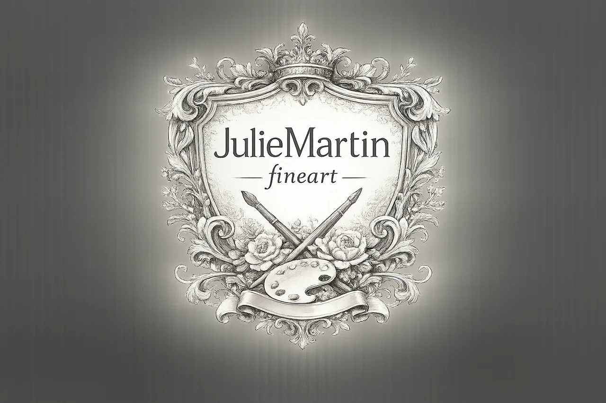

ABOUT THE ARTIST
Julie Martin.
A fine artist inspired by landscapes, animals and the natural world.
Julie’s work explores the atmosphere, character and emotion found in the world around us, from the stillness of a landscape to the spirit of wildlife.
Her practice includes painting, sculpture and mixed media, with nature at the centre of her work.
Explore the gallery
THE SUBJECTS
A connection
with nature.
Landscapes and animals are recurring subjects in Julie’s work. She is interested in the details, moods and character that give each subject its own presence.
For information about current pieces, or to discuss a subject for a commission, contact Julie directly.
Get in touchARTWORK & COMMISSIONS
Ask Julie about her work.
Enquire about an original piece or share an idea for a commission.
Contact Julie